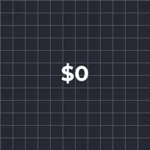
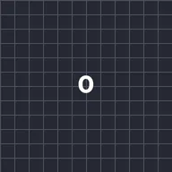

Kira Naik/Turun

Menukar setiap nombor dalam lapisan teks: nilainya didarab dan ditambah, jadi bingkai kunci Darab dari 0% ke 100% akan mengira naik ke nombor yang anda taip. Perkataan di sekeliling nombor kekal seperti asal.
Tetapan
| Tetapan | Jenis | Julat | Lalai |
|---|---|---|---|
| Tambah | Nombor | -100000 hingga 100000 | 0 |
| Darab | Nombor | -200% hingga 200% | 100% |
| Tempat Perpuluhan | Pilihan | Seperti Ditaip, 0, 1, 2, 3 | Seperti Ditaip |
| Ribu | Pilihan | 1000.5, 1,000.5, 1.000,5, 1 000.5 | 1000.5 |
Pratetap
Pilih satu daripada halaman butiran kesan dalam Pustaka Kesan. Setiap satu ialah tetapan siap sedia yang boleh anda terus edit.

Kira naik